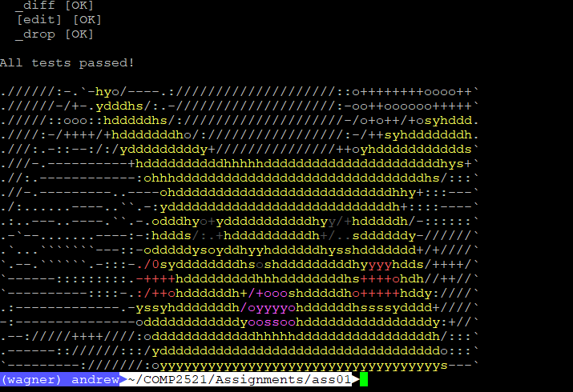

Assignment One - Textbuffer
Contents
The first assignment for this course was to implement an ADT that would be able to store, and modify lines of text in it.
Also, suprised pikachu meme, I choose you!!

Questions
struct textbuffer {…}
Having a look at textbuffer.h, I was abit confused as to where the struct textbuffer definition was.
The compiler needs to know right?
We’re not just just doing Textbuffer __ = malloc(sizeof(*__)); since the compiler won’t know how large struct textbuffer is?
EDIT: Nevermind, I did a dumb dumb; I am meant to implement the structure for struct textbuffer myself.
Iterating new lines
If I were to use strsep(3), if (*line == '\0') break; won’t work.
Why? Because if I had an input of \n\nhello\n\0, the loop would break because between \n and \n is \0. Aaaah!
The way I did it was:
|
|
The special thing here is the && inputCursor part:
When strsep encounters the EOL; it returns the previous value of inputCursor, before setting inputCursor = NULL.
Without this, the loop would execute one too many times.
textbuffer_swap
If I switch tb[0], the head does not change, and cannot change via the current function prototype.
So then, I’ll have to separate the struct textbuffer type from the struct textbufferline type.
EDIT: Okay four rewrites later, I finally got it working ahahh. Each time an edge case always broke.
textbuffer_to_str
char *array = malloc(textbuffer_bytes(tb) ? textbuffer_bytes(tb) : 1);
EDIT: Overruled by FAQ
My textbuffer has no lines; what should textbuffer_to_str return?
NULL.
textbuffer_bytes
This function returns the number of characters that the textbuffer represents, but does it include the \0 (string EOF) character?
> UPDATE: Nope it doesn’t - it functions accordingly to strlen(3)
textbuffer_search
This function returns the line number that contains a string.
BUT WHAT IF DOESN’T CONTAIN THAT STRING? HALP
UPDATE: size_t changed to ssize_t to accomate for failed searches (ret: -1)
Also, the rev parameter means to search starting from the back
Now, you see, if counting didn’t start from 0, then we could have assigned 0 to be false.
BUT NOOOOO WE START AT ZERO
textbuffer_replace
Don’t do a while loop to keep trying to replace.
Because what if I replaced the to there?
| Hello the
| Hello there
| Hello therere
| Hello thererere
| Hello therererere
…
| Hello therererererererererererererererere
textbuffer_undo / textbuffer_redo
The textbuffer_redo function required slightly more thinking…
I originally planned on storing both undos and redos (the content prior to a redo) in the same array.
But then I would run into overlapping, where continuous redos would eventually change the text back into an old state.
Sure I could have gotten it to work; but I decided that it was easier to just separate both.
Also, oh boy look at this madness
|
|
strok vs strsep
“You would only use strtok() when someone threatens your life if you don’t do so.” - StackOverflow
TIL
forloops in C can have initialisers of only one data type